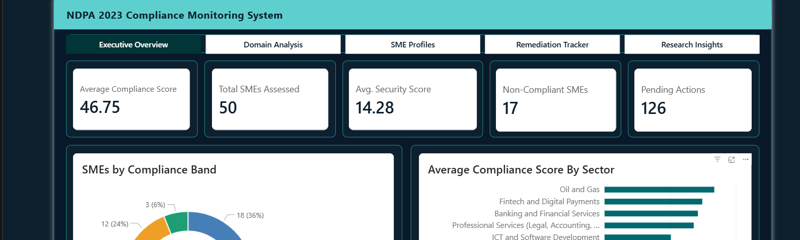
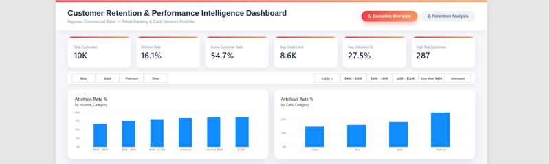

Social & content↗
8,500% audience growth
Grew Theworddaily's audience in 30 days through targeted engagement, daily prompts and sharper content hooks.
30 days
Ochemba Onyekachi Tejiri · Abuja, Nigeria
I turn audience insight, content and complex data into systems that move work forward.
Strategy · Content · Data · Operations
Building smarter systems for people, brands and ideas.
Featured impact
Strategy, content, data and automation—connected by a bias for useful outcomes.
Grew Theworddaily's audience in 30 days through targeted engagement, daily prompts and sharper content hooks.
Combined RSS, Apify, Google Trends and Gemini API into a decision-ready research workflow.

A 41-item assessment, 17-node n8n pipeline, MySQL store and five-page Power BI dashboard.

Prepared and segmented 10,127 records to expose churn patterns and actionable retention opportunities.
About
I'm Kachi, a creative and analytical professional with an Electronic and Computer Engineering background. I work across social media strategy, content creation, operational reporting and data systems.
What ties it together is simple: understand the audience or problem, find the useful signal, and communicate it clearly enough to drive action.
Experience
Kiwi Consulting Group LLC · Remote
Prepare weekly operational performance reports for the CEO, verify information for decisions and consolidated task tracking from Asana and ClickUp into one Notion workspace—saving an estimated 20 minutes per person per day across a 10-person team.
Kiwi Consulting Group LLC · Remote
Built the AI-assisted research workflow, conducted competitor monitoring and trend analysis, and translated findings into leadership-ready reports and content direction.
Selected clients & work
Let's connect
I'm open to thoughtful roles and selected projects across data, automation, content and operations.